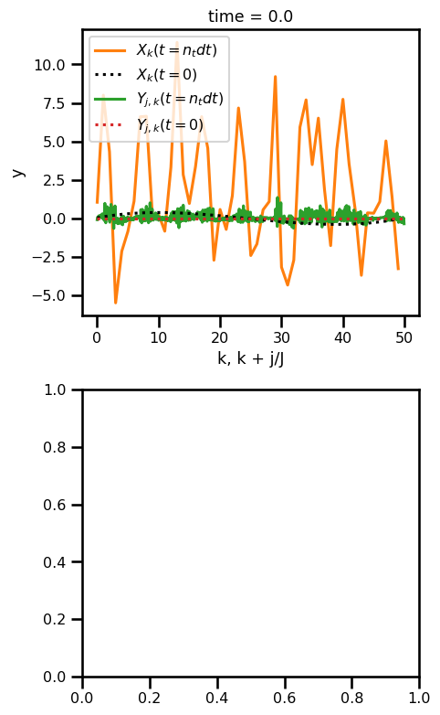
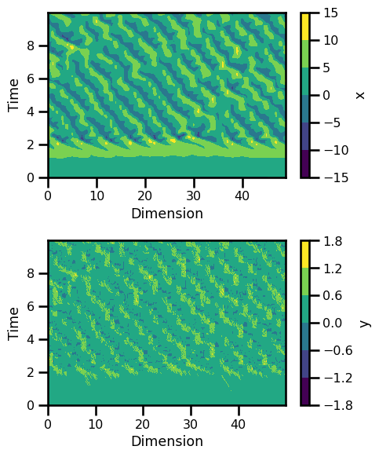
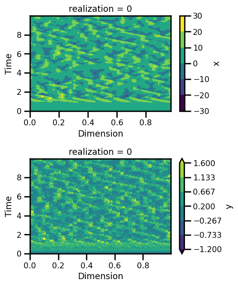

Lorenz 96 - 2 Level - ODE#
import autoroot # noqa: F401, I001
import jax
import jax.numpy as jnp
import jax.random as jrandom
import matplotlib.pyplot as plt
import seaborn as sns
import diffrax as dfx
import xarray as xr
import numpy as np
import functools as ft
from jaxsw._src.models.lorenz96t import L96TParams, L96TState, rhs_lorenz_96t, Lorenz96t
sns.reset_defaults()
sns.set_context(context="talk", font_scale=0.7)
%matplotlib inline
%load_ext autoreload
%autoreload 2
Lorenz 96#
Equation of Motion
Observation Operator
Integrate
Equation of Motion#
\[\begin{split}
\begin{aligned}
\frac{dx}{dt} &= (x_{i+1} - x_{i-2})x_{i-1}-x_i + F - \frac{h c}{b} \sum_{j}y_j \\
\frac{dy}{dt} &= -b c (y_{j+2} - y_{j-1})y_{j+1}- c y_j - \frac{h c}{b} x_i
\end{aligned}
\end{split}\]
where \(F\) is normally 8 to cause some chaotic behaviour.
F = 10.0 # forcing term
b = 10.0 # coupling coefficient
h = 1.0 # ratio of amplitudes
c = 10.0 # time-scale ratio
# initialize state
ndims = 50, 20
noise = 0.01
key = jrandom.PRNGKey(42)
state = L96TState.init_state(ndims=ndims, noise=noise, key=key)
# rhs
x = state.x
y = state.y
assert x.shape == (ndims[0],)
assert y.shape == (ndims[1] * ndims[0],)
x_dot, y_dot, coupling_term = rhs_lorenz_96t(x=x, y=y, F=F, h=h, c=c, b=b)
assert x_dot.shape == x.shape
assert y_dot.shape == y.shape
assert coupling_term.shape == x.shape
Model#
K = ndims[0]
J = ndims[1]
def s(k, K):
"""A non-dimension coordinate from -1..+1 corresponding to k=0..K"""
return 2 * (0.5 + k) / K - 1
k = np.arange(K) # For coordinate in plots
j = np.arange(J * K) # For coordinate in plots
# Initial conditions
X_init = s(k, K) * (s(k, K) - 1) * (s(k, K) + 1)
Y_init = 0 * s(j, J * K) * (s(j, J * K) - 1) * (s(j, J * K) + 1)
state_init = L96TState(x=jnp.asarray(X_init), y=jnp.asarray(Y_init))
params = L96TParams(F=F, h=h, b=b, c=c)
# t0 = 0.0
# t1 = 30.0
# # initialize state
# F = 10.0 # forcing term
# b = 10.0 # coupling coefficient
# h = 1.0 # ratio of amplitudes
# c = 10.0 # time-scale ratio
# ndims = 36, 10
# noise = 0.05
# batchsize = 1
# state_init, params = L96TState.init_state_and_params(
# ndims=ndims, noise=noise, batchsize=batchsize,
# F=F, h=h, b=b, c=c
# )
# initialize model
advection = True
l96t_model = Lorenz96t(advection=advection)
# step through
state_dot = l96t_model.equation_of_motion(t=0, state=state_init, args=params)
# state_dot.x.shape
assert state_dot.x.shape == state_init.x.shape
assert state_dot.y.shape == state_init.y.shape
Time Stepping#
dt = 0.005
t0 = 0.0
t1 = 2_000
ts = jnp.arange(t0, t1, 1) * dt
saveat = dfx.SaveAt(ts=ts)
saveat
SaveAt(
subs=SubSaveAt(
t0=False,
t1=False,
ts=f32[2000],
steps=False,
fn=<function save_y>
),
dense=False,
solver_state=False,
controller_state=False,
made_jump=False
)
# Euler, Constant StepSize
solver = dfx.Tsit5()
stepsize_controller = dfx.PIDController(rtol=1e-5, atol=1e-5)
# integration
sol = dfx.diffeqsolve(
terms=dfx.ODETerm(l96t_model.equation_of_motion),
solver=solver,
t0=ts.min(),
t1=ts.max(),
dt0=dt,
y0=state_init,
saveat=saveat,
args=params,
stepsize_controller=stepsize_controller,
)
Analysis#
ds_sol = xr.Dataset(
{
"x": (("time", "Dx"), sol.ys.x.squeeze()),
"y": (("time", "Dy"), sol.ys.y.squeeze()),
},
coords={
"time": (["time"], sol.ts.squeeze()),
"Dx": (["Dx"], k),
"Dy": (["Dy"], j / J),
},
attrs={
"ode": "lorenz_96_2layer",
# "sigma": params.sigma,
# "beta": params.beta,
# "rho": params.rho,
},
)
ds_sol
<xarray.Dataset>
Dimensions: (time: 2000, Dx: 50, Dy: 1000)
Coordinates:
* time (time) float32 0.0 0.005 0.01 0.015 0.02 ... 9.98 9.985 9.99 9.995
* Dx (Dx) int64 0 1 2 3 4 5 6 7 8 9 10 ... 40 41 42 43 44 45 46 47 48 49
* Dy (Dy) float64 0.0 0.05 0.1 0.15 0.2 ... 49.75 49.8 49.85 49.9 49.95
Data variables:
x (time, Dx) float32 0.03881 0.1094 0.171 0.2239 ... 5.031 1.38 -3.26
y (time, Dy) float32 0.0 0.0 0.0 0.0 ... -0.1538 0.003894 -0.3444
Attributes:
ode: lorenz_96_2layerfig, ax = plt.subplots(nrows=2, figsize=(5, 8))
time_step = -1
ds_sol.x.isel(time=time_step).plot(
ax=ax[0], label="$X_k(t=n_t dt)$", color="tab:orange"
)
ds_sol.x.isel(time=0).plot(
ax=ax[0], label="$X_k(t=0)$", color="black", linestyle=":", zorder=3
)
ds_sol.y.isel(time=time_step).plot(
ax=ax[0], label="$Y_{j,k}(t=n_t dt)$", color="tab:green"
)
ds_sol.y.isel(time=0).plot(
ax=ax[0], label="$Y_{j,k}(t=0)$", color="tab:red", linestyle=":", zorder=3
)
ax[0].legend()
# ax[0].set_ylabel("Time")
ax[0].set_xlabel("k, k + j/J")
# ds_sol.y.plot.contourf(ax=ax[1], cmap="viridis")
# ax[1].set_ylabel("Time")
# ax[1].set_xlabel("Dimension")
plt.tight_layout()
plt.show()

fig, ax = plt.subplots(nrows=2, figsize=(5, 6))
ds_sol.x.plot.contourf(ax=ax[0], cmap="viridis")
ax[0].set_ylabel("Time")
ax[0].set_xlabel("Dimension")
ds_sol.y.plot.contourf(ax=ax[1], cmap="viridis")
ax[1].set_ylabel("Time")
ax[1].set_xlabel("Dimension")
plt.tight_layout()
plt.show()

Batch of Trajectories#
F = 18.0 # forcing term
b = 10.0 # coupling coefficient
h = 1.0 # ratio of amplitudes
c = 10.0 # time-scale ratio
params = L96TParams(F=F, h=h, b=b, c=c)
# initialize state
ndims = 36, 10
noise = 0.001
batchsize = 50
state = L96TState.init_state(ndims=ndims, noise=noise, batchsize=batchsize)
# rhs
x = state.x
y = state.y
rhs_fn = ft.partial(rhs_lorenz_96t, F=F, h=h, c=c, b=b)
fn_batched = jax.vmap(rhs_fn, in_axes=(0, 0))
x_dot, y_dot, _ = fn_batched(state.x, state.y)
assert x_dot.shape == state.x.shape
assert y_dot.shape == state.y.shape
key = jrandom.PRNGKey(123)
keyx, keyy = jrandom.split(key=key, num=2)
X_init_batch = X_init + noise * jrandom.normal(key=keyx, shape=(batchsize, 1))
Y_init_batch = Y_init + noise * jrandom.normal(key=keyy, shape=(batchsize, 1))
state_init = L96TState(x=jnp.asarray(X_init_batch), y=jnp.asarray(Y_init_batch))
params = L96TParams(F=F, h=h, b=b, c=c)
X_init_batch.shape, X_init.shape, Y_init_batch.shape, Y_init.shape
((50, 50), (50,), (50, 1000), (1000,))
import equinox as eqx
state = eqx.tree_at(lambda x: x.x, state, sol.ys.x[:, -1])
state = eqx.tree_at(lambda x: x.y, state, sol.ys.y[:, -1])
# Euler, Constant StepSize
solver = dfx.Tsit5()
stepsize_controller = dfx.ConstantStepSize()
# integration
integrate = lambda state: dfx.diffeqsolve(
terms=dfx.ODETerm(l96t_model.equation_of_motion),
solver=solver,
t0=ts.min(),
t1=ts.max(),
dt0=dt,
y0=state,
saveat=saveat,
args=params,
stepsize_controller=stepsize_controller,
)
sol = jax.vmap(integrate)(state)
ds_sol = xr.Dataset(
{
"x": (("realization", "time", "Dx"), sol.ys.x.squeeze()),
"y": (("realization", "time", "Dy"), sol.ys.y.squeeze()),
},
coords={
"realization": (["realization"], np.arange(0, len(sol.ys.x))),
"time": (["time"], sol.ts[0].squeeze()),
"Dx": (["Dx"], np.arange(0, ndims[0], 1) / ndims[0]),
"Dy": (["Dy"], np.arange(0, (ndims[0] * ndims[1]), 1) / (ndims[0] * ndims[1])),
},
attrs={
"ode": "lorenz_96_2layer",
# "sigma": params.sigma,
# "beta": params.beta,
# "rho": params.rho,
},
)
ds_sol
<xarray.Dataset>
Dimensions: (realization: 50, time: 2000, Dx: 36, Dy: 360)
Coordinates:
* realization (realization) int64 0 1 2 3 4 5 6 7 ... 42 43 44 45 46 47 48 49
* time (time) float32 0.0 0.005 0.01 0.015 ... 9.98 9.985 9.99 9.995
* Dx (Dx) float64 0.0 0.02778 0.05556 ... 0.9167 0.9444 0.9722
* Dy (Dy) float64 0.0 0.002778 0.005556 ... 0.9917 0.9944 0.9972
Data variables:
x (realization, time, Dx) float32 0.007382 0.001135 ... 4.926
y (realization, time, Dy) float32 0.0007129 0.0001814 ... 0.1033
Attributes:
ode: lorenz_96_2layerfig, ax = plt.subplots(nrows=2, figsize=(5, 6))
realization = 0
ds_sol.x.isel(realization=realization).plot.contourf(ax=ax[0], cmap="viridis")
ax[0].set_ylabel("Time")
ax[0].set_xlabel("Dimension")
ds_sol.y.isel(realization=realization).plot.contourf(
ax=ax[1], cmap="viridis", vmax=1.6, vmin=-1.2
)
ax[1].set_ylabel("Time")
ax[1].set_xlabel("Dimension")
plt.tight_layout()
plt.show()

fig, ax = plt.subplots(nrows=2, figsize=(5, 6))
realization = 10
ds_sol.x.isel(realization=realization).plot.contourf(
ax=ax[0], cmap="viridis", vmax=16, vmin=-12
)
ax[0].set_ylabel("Time")
ax[0].set_xlabel("Dimension")
ds_sol.y.isel(realization=realization).plot.contourf(
ax=ax[1], cmap="viridis", vmax=1.6, vmin=-1.2
)
ax[1].set_ylabel("Time")
ax[1].set_xlabel("Dimension")
plt.tight_layout()
plt.show()

fig, ax = plt.subplots(nrows=3, figsize=(5, 8))
for i in range(3):
da_sol.isel(realization=i).T.plot.imshow(ax=ax[i], cmap="viridis")
ax[i].set_xlabel("Time")
ax[i].set_ylabel("Dimension")
plt.tight_layout()
plt.show()
---------------------------------------------------------------------------
NameError Traceback (most recent call last)
Cell In[20], line 4
1 fig, ax = plt.subplots(nrows=3, figsize=(5, 8))
3 for i in range(3):
----> 4 da_sol.isel(realization=i).T.plot.imshow(ax=ax[i], cmap="viridis")
6 ax[i].set_xlabel("Time")
7 ax[i].set_ylabel("Dimension")
NameError: name 'da_sol' is not defined